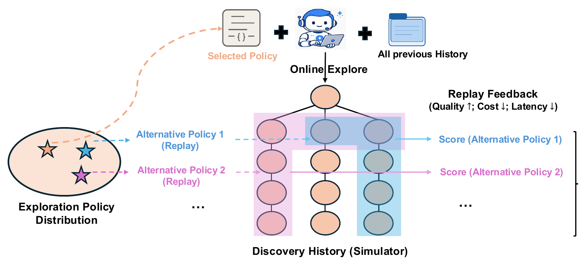
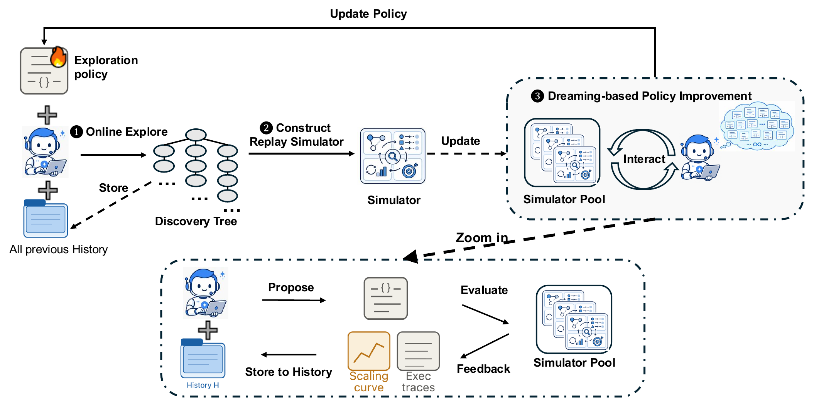

生成与评价
同一 discovery agent、evaluator、执行接口、初始策略和单轮资源约束。
Dream-RSI: Recursive Self-Improvement through Evolving WorldsTong Zheng、Xidong Wu、Zheng Zhang、Zhankui He、Chaoyi Zhang、Benjamin Coleman 等 · Google Research / Google DeepMind / UMD / UVA · 2026-09-14
Dream-RSI 不修改负责生成候选答案的底层 Agent，而是学习怎样分配探索预算。它把过去形成的搜索树保存成可重复运行的环境，在不重新执行昂贵任务的情况下测试新的分支选择和停止规则。
Dream-RSI 把长时程科学发现拆成两层：底层 Agent 产生并评估候选；上层 exploration policy 决定开哪条分支、继续哪条分支、并行多少次、何时停止。论文真正要自我改进的是第二层。 以下从问题成因、既有方法缺口与论文假设三个层面界定研究问题。
去掉论文品牌名，这是一种面向昂贵搜索的控制器学习范式：固定候选生成器与评价器，只让计算分配策略根据历史树反馈进化。
在线阶段得到的不只是最优答案，而是一棵含成功、失败和中间状态的 discovery tree。Dream-RSI 把它转成环境：控制器每次选叶子，环境就揭示历史上已经发生的下一个节点。 以下按总体流程、关键机制与实现约束说明技术路线。
树根表示初始工作区；每个非根节点都保存从父节点恢复后的一次生成—评估尝试，包括文件系统快照、产物、诊断和分数。控制器能选择根节点以开启新分支，也能选择当前已揭示子树的叶子以继续既有分支。一次动作是至多 W 个节点组成的批次，因此同时编码了搜索位置和并发规模。
在线与离线共享同一决策接口，区别只在 transition。在线选择节点后，真实 discovery agent 生成新候选，结果具有随机性；离线 replay 则直接揭示记录在历史树中的子节点，结果确定且无需重新执行。控制器只能看到当前已经揭示的前缀，不能偷看最终赢家或未揭示分数。

替代策略可以更换分支选择、探索顺序、并发与停止规则，并用已存储的节点结果计算质量、调用数和轮次；它不能生成历史中不存在的子节点。
阅读要点：这张图既解释了方法的效率，也暴露了核心偏差。离线反馈只在已实现的搜索支持集上有效，无法回答“若当时采用另一策略，底层 Agent 会不会生成完全不同的候选”。
回放得分同时奖励最好结果、惩罚所揭示的非根节点数，并按“尝试数 ÷ 决策轮数”奖励有效并行。形式上可写成：最佳分数 − β₁·尝试数 + β₂·平均并行度。它把搜索质量、总调用量和顺序延迟压进一个可比较的控制器目标。
系统以“在线产生世界—离线在世界中改策略—重新部署”为一个外循环。递归性不是模型修改自己的权重，而是可执行搜索控制器不断利用更大的经验世界集合重写自身代码。
每一轮在线探索时，控制策略保持不变，底层 Agent 只在选中的分支上继续生成。探索结束后，新产生的树会加入历史集合。
随后进入离线阶段：策略开发 Agent 读取历史回放、分数和失败模式，提出新的控制策略，再在全部历史树上测试。系统保留历史平均分最高的版本。因此可以保证新版本在已有回放上不退步，但不能保证它在全新的在线环境中也一定更好。

历史树不断扩充 simulator pool；策略开发 Agent 在池中提出、评估并修订控制器，然后把胜出版本部署到新的在线搜索。
阅读要点：系统把“会发现什么”与“如何分配发现计算”分开。论文实验保持 discovery agent、evaluator、初始化和每轮资源上限一致，因此与固定探索基线的差异主要落在元探索策略的适应上。
同一 discovery agent、evaluator、执行接口、初始策略和单轮资源约束。
选择分支、分配并发、决定继续或停止，并以可执行代码表示。
新在线树加入历史，使下一轮控制器在更多失败与成功轨迹上回放。
最有说服力的对照不是跨系统排行榜，而是论文设置的固定探索基线。两边使用相同的底层 Agent、评价器、初始状态和资源上限，第一轮行为也相同；从第二轮开始，只有 Dream-RSI 会根据历史回放修改控制策略。
论文覆盖 8 个任务、3 个领域。固定基线中，Gemini-3.1 Pro 每轮为 10 个并行工作区 × 11 步，即 110 次 discovery-agent 调用；Gemini-3.7 Flash 为 32 × 20，即 640 次。Dream-RSI 保留同样的每轮上限，但学习到的策略可以提前停止、改变并发或把尝试集中到更有价值的分支。
| 领域 / 任务 | Dream-RSI | 关键对照 | 可支持的结论 |
|---|---|---|---|
| Lasso · Gemini-3.1 Pro | 2931.0 ms；317 calls | Fixed：3587.1 ms；550 calls | 更低下游平均运行时，同时少 42.4% 调用 |
| Lasso · Gemini-3.7 Flash | 2350.6 ms；1879 calls | Fixed：2516.7 ms；3200 calls | 更低运行时，同时少 41.3% 调用 |
| 数学 · Sum–Difference | 1.145427 ↑ | Fixed 1.144047；SimpleTES 1.143975 | 在所列方法中取得最高分 |
| 数学 · Circle Packing | 2.635983 ↑ | 多种系统同为 2.635983 | 追平最强报告结果，不构成独占优势 |
| 数学 · Autocorrelation | 1.456375 ↓；<1000 generations | SimpleTES 1.453675；51,200 generations | 质量略逊，但预算低 50× 以上 |
| GPU · VGG16 / LayerNorm | 相近性能 | 2.43× / 1.79× 更少 generations | 达到相近终点所需搜索更少 |
| GPU · ConvDiv / ConvMax | 2.09× / 1.44× 更高性能 | 相近发现预算的 Fixed | 在两个任务上提高最终内核性能 |
来源：论文 Figure 3、Table 1、Figure 4 及正文。Lasso 的 ms 为六个 held-out 数据集平均运行时，越低越好；GPU 指标为 1/ms，越高越好。
Dream-RSI 的效率来自历史树的确定性，也因此受历史树支持集约束。论文证明了“在已有经验世界上筛出的控制器常能改善下一轮”，没有证明 replay 分数是新在线策略价值的无偏估计。 以下区分概念贡献、方法价值、主要局限与后续验证方向。
最强反事实：在同一历史树和策略开发预算下，比较手工启发式、离线超参搜索与 Dream-RSI；若简单调度器匹配收益，LLM 策略进化并非必要。泛化检验：将历史树分为开发集与留出世界，在未见树和全新在线 rollout 上盲评，并测量 replay—online 排名相关性。
支持集与成本：要求候选选择历史未覆盖的分支类型，再比较 replay 代理分数与真实在线结果；同时统一统计 discovery calls、策略开发 Token、回放计算、存储、墙钟时间和失败 rollout，形成完整成本—质量前沿。
来源与口径：基于 arXiv:2609.14858v1（2026-09-14）论文 PDF 与官方源文件整理；数值均来自论文正文、表格和图。本文未独立复现实验；关于支持集偏差、off-policy mismatch、选择过拟合与完整成本的内容，是基于方法结构作出的证据约束分析。
↑ 返回顶部